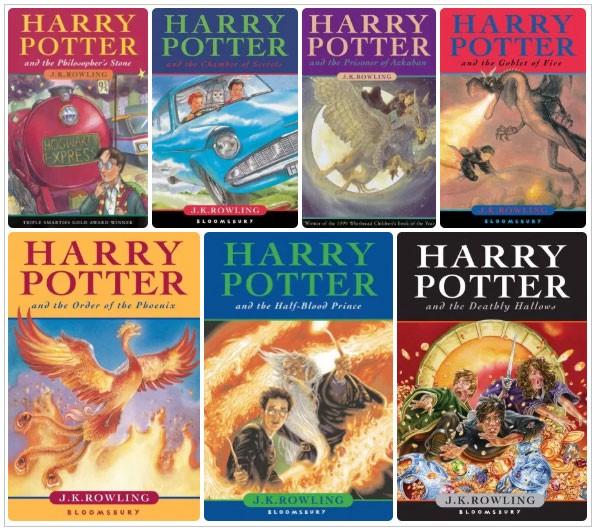
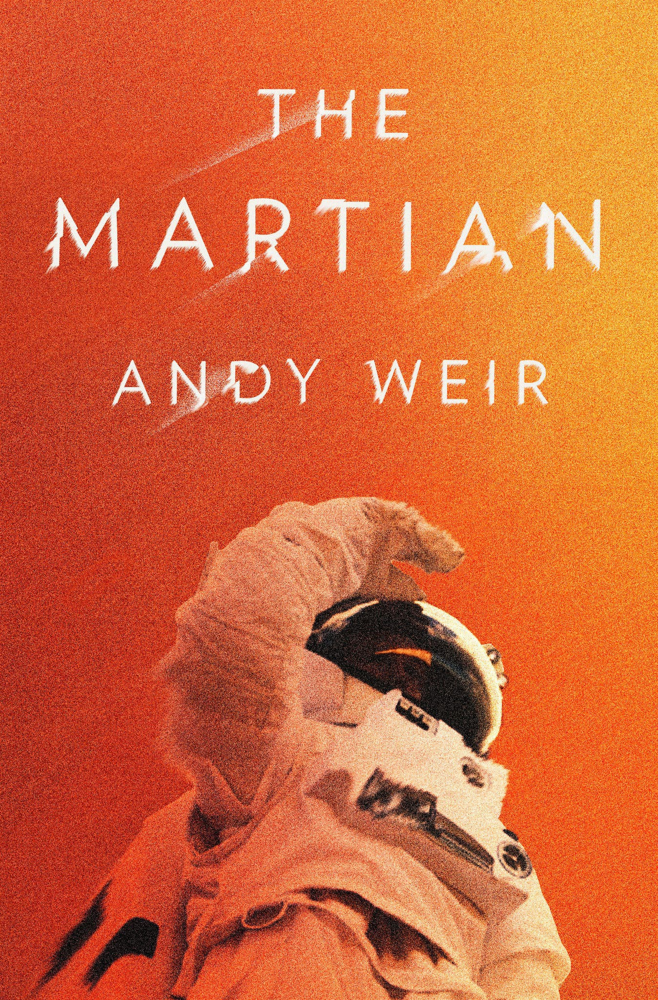
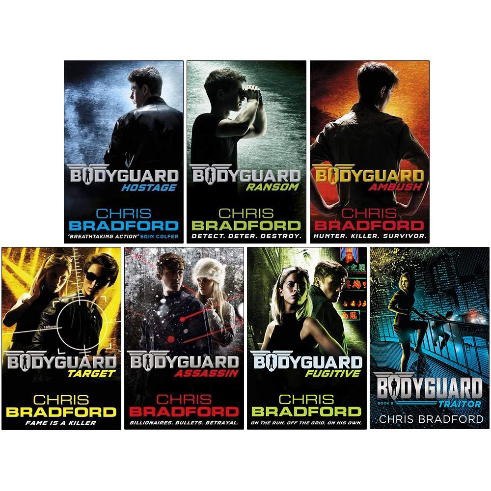

All the Potterheads have at least once dreamt of receiving their very own letter from Hogwarts! I know that almost everybody recommends these books but here I go… This series, written by JK Rowling, revolves around a teenager’s life in the Wizarding World. The protagonist, Harry Potter, faces several challenges in his time at Hogwarts which he combats along with his two best friends Ron and Hermione (friendship goals everybody!!). He makes several friends and more than a few enemies in the course of 7 books. I recommend this enthralling series because it’s more than just a huge part of my childhood. Harry Potter is not a novel series, it’s a lifestyle!! It can take you on adventures, make you feel love, betrayal, sorrow and a lot more!!
We’ve all thought about astronauts going to Mars and exploring life and water there. But what if someone got stranded on Mars? Survival becomes the top most priority for Mark Watney, a botanist and mechanical engineer, as he’s left alone on Mars by his fellow astronauts on the Ares 3 mission due to their presumption that he’s dead. It’s 2035 and Mark has lost connection with NASA. To go back to Earth, he needs to wait for the members of the next Ares mission that is supposed to land a thousand kilometers away from where he is now. As Watney takes notes about his life on Mars, the reader relates to him and even laughs many times. Andy Weir’s detailed writing never misses to grab the reader’s attention throughout the book.
Do you crave action and adventure? Seriously do you? Then you NEED this series on your bookshelf. Bodyguard is one of the most underrated book series I have ever come across. It talks about the life of a teenager, Connor Reeves, who lost his father at a very young age. His father died during an operation, while body-guarding the US president. Connor is recruited by an agency called Bodyguard which recruits kids around his age to protect kids around his age, one can say in Colonel Black’s words- to act like the last ring of defence. As you’ll flip through the pages, you’ll find yourself rooting for Connor and his fellow buddyguards. You’ll fight along with them to protect someone and you’ll definitely fall in love with the characters.
Hope this blog did make you want to read books more than ever. Happy Reading
😄